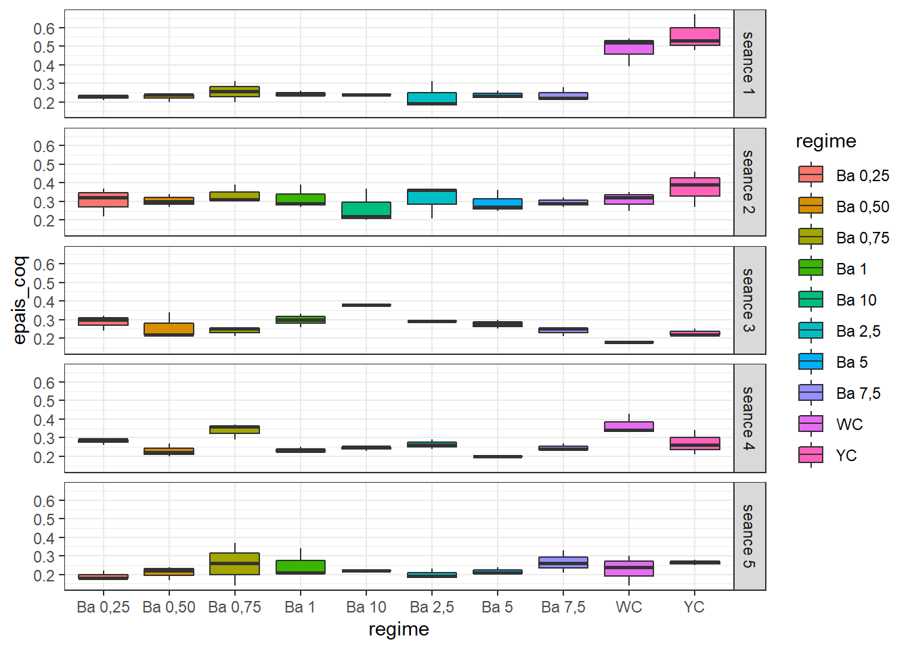
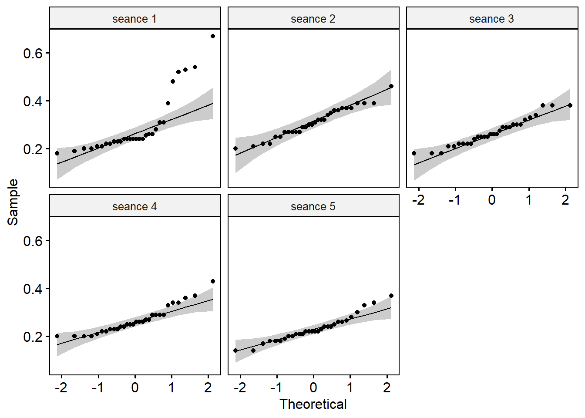
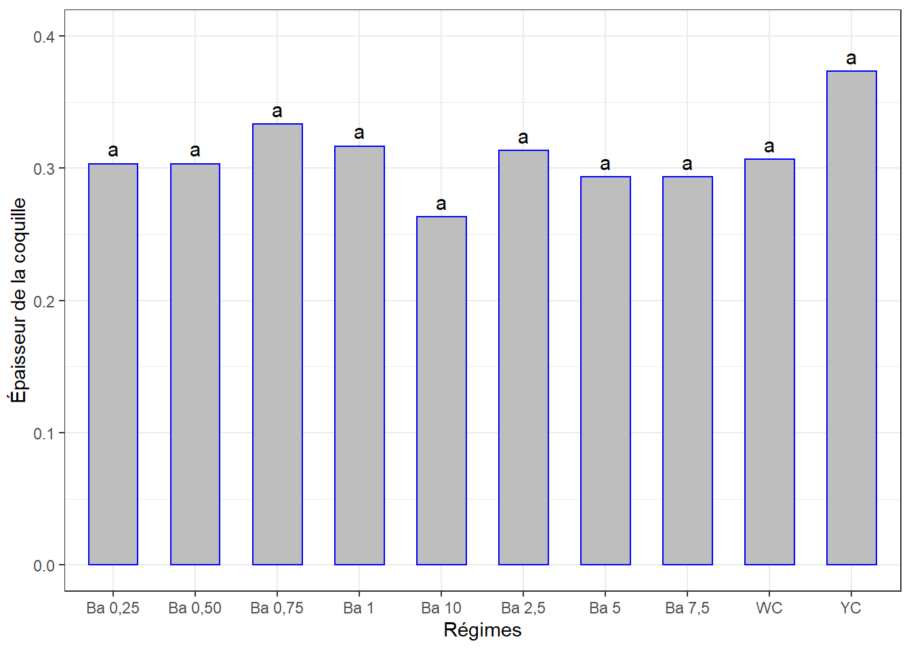
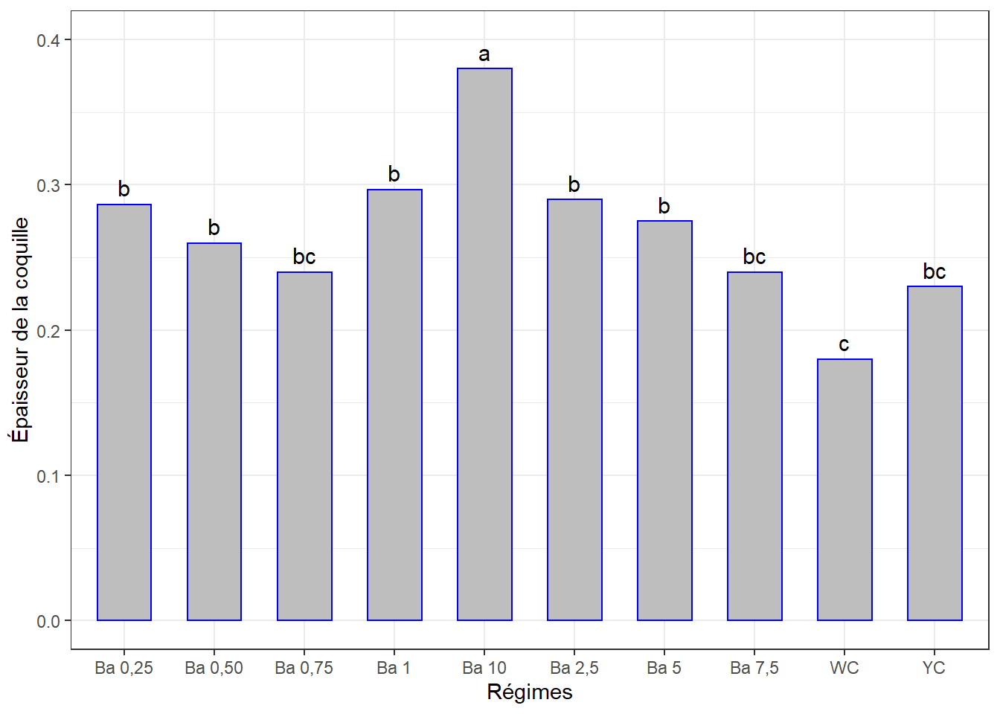
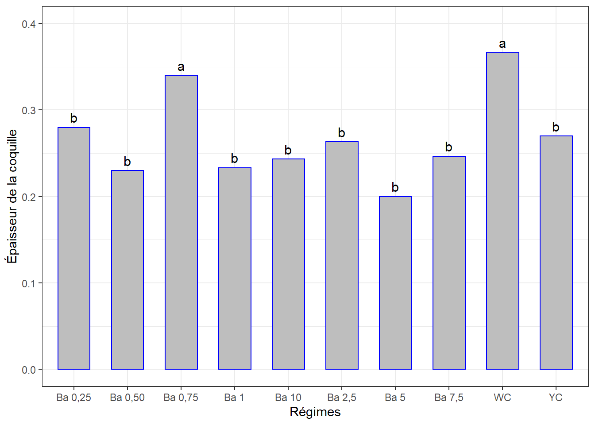
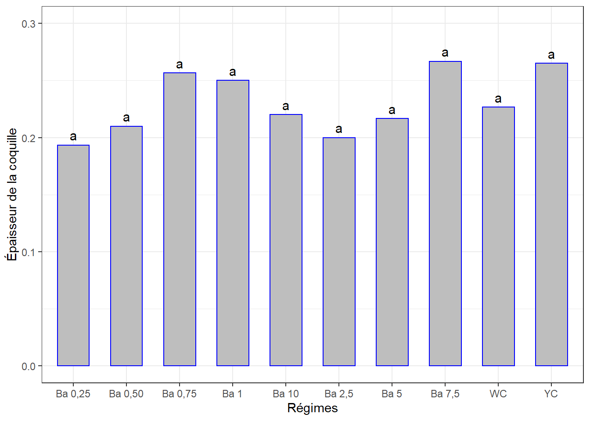
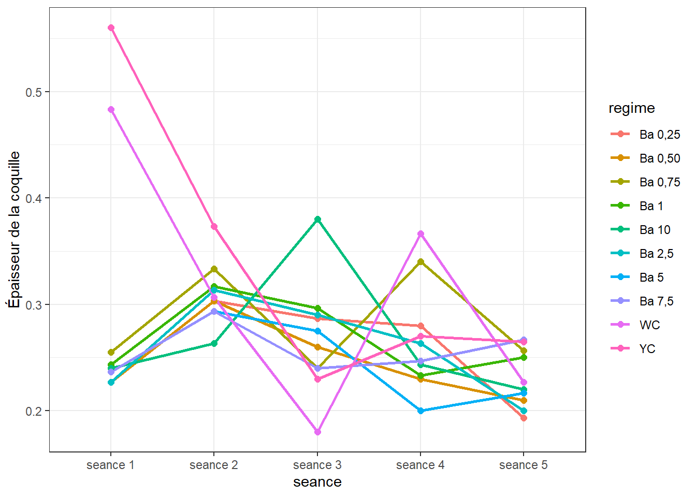
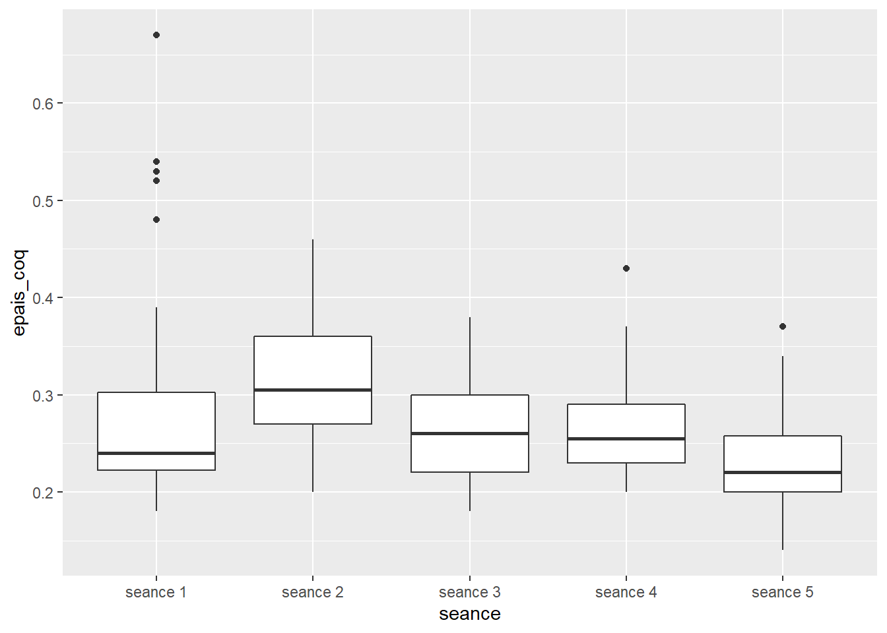
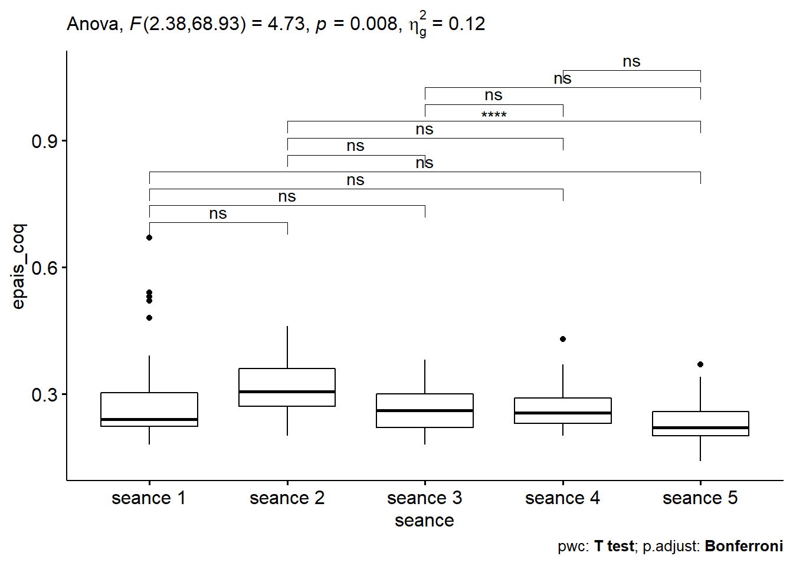

Chapitre 6 Épaisseur de la coquille
La démarche sera la même que celle des chapitres précédents. Il se peut qu’il y ait moins de commentaires.
Même jeu de données oeuf.csv qui contient différentes mesures dont les épaisseurs de coquilles d’oeuf mesurées en 5 séances. Mêmes traitements (régimes).
La question est de savoir si les différents régimes induisent des épaisseurs de coquille d’oeuf significativement différentes avec le temps. Mais chaque traitement n’ayant pas été appliqué sur chaque groupe d’oiseaux, l’ANOVA à mesures répétées ne pourrait pas être appliquée. Nous comparerons les effets des traitements séance par séance, puis à l’aide d’une figure on appréciera s’il y a une évolution en fonction du temps.
6.1 Les données
ep <- read_csv("data/oeuf.csv")
ep <- ep %>%
select(seance, regime, no_oeuf, epais_coq) %>%
mutate(id = rep(1:30, 5), .before = 1,
id = factor(id),
seance = factor(seance),
regime = factor(regime))Le tableau a été préalablement structuré en format long en Excel. J’ai ajouté un identifiant (id) pour les échantillons des séances.
## Rows: 150
## Columns: 5
## $ id <fct> 1, 2, 3, 4, 5, 6, 7, 8, 9, 10, 11, 12, 13, 14, 15, 16, 17, 1~
## $ seance <fct> seance 1, seance 1, seance 1, seance 1, seance 1, seance 1, ~
## $ regime <fct> "Ba 0,25", "Ba 0,25", "Ba 0,25", "Ba 0,50", "Ba 0,50", "Ba 0~
## $ no_oeuf <dbl> 1, 2, 3, 1, 2, 3, 1, 2, 3, 1, 2, 3, 1, 2, 3, 1, 2, 3, 1, 2, ~
## $ epais_coq <dbl> 0.240, 0.210, 0.230, 0.240, 0.240, 0.200, 0.310, 0.200, 0.25~6.2 Visualisation boxplots
bxp <- ggplot(ep, aes(x = regime, y = epais_coq, fill = regime)) +
geom_boxplot() +
facet_grid(seance ~ .) +
theme(axis.text.x = element_text(angle = 90, color = "black", vjust = 0.5, hjust = 1)) +
theme_bw()
bxp
Il y a des variations notables d’une séance à l’autre pour certains régimes.
6.3 Détection des valeurs aberrantes extrêmes
## [1] seance regime id no_oeuf epais_coq is.outlier is.extreme
## <0 rows> (or 0-length row.names)=> Pas de valeurs aberrantes extrêmes pour toutes les séances.
6.4 Conditions de l’ANOVA
6.4.1 Normalité
Si les données sont normalement distribuées, la p-value de Shapiro-Wilk doit être supérieure à 0,05 pour chaque régime.
## # A tibble: 5 x 4
## seance variable statistic p
## <fct> <chr> <dbl> <dbl>
## 1 seance 1 epais_coq 0.728 0.00000413
## 2 seance 2 epais_coq 0.972 0.605
## 3 seance 3 epais_coq 0.949 0.159
## 4 seance 4 epais_coq 0.907 0.0124
## 5 seance 5 epais_coq 0.947 0.143=> Normalité confirmée pour toutes les séances sauf la première.
Créer des QQ-plots pour chaque point par séance

Tous les points se situent approximativement le long de la ligne de référence. Sauf pour la 1ère séance. On regardera de plus près celle-là au moment venu.
6.4.2 Homogénéité des variances
## # A tibble: 5 x 5
## seance df1 df2 statistic p
## <fct> <int> <int> <dbl> <dbl>
## 1 seance 1 9 20 0.748 0.663
## 2 seance 2 9 20 0.242 0.983
## 3 seance 3 9 20 0.680 0.718
## 4 seance 4 9 20 0.740 0.669
## 5 seance 5 9 20 1.12 0.394=> Toutes les valeurs p sont > 0.05 => toutes les variances sont homogènes.
Les conditions de la validité d’une ANOVA étant remplies, les interprétations seront donc valides. Le cas de la séance 4 vera une vérification supplémentaire.
6.5 ANOVA à 1 facteur séance par séance
6.5.1 Séance 1
## # A tibble: 5 x 7
## id seance regime no_oeuf epais_coq is.outlier is.extreme
## <fct> <fct> <fct> <dbl> <dbl> <lgl> <lgl>
## 1 25 seance 1 YC 1 0.48 TRUE FALSE
## 2 26 seance 1 YC 2 0.67 TRUE TRUE
## 3 27 seance 1 YC 3 0.53 TRUE FALSE
## 4 28 seance 1 WC 1 0.54 TRUE FALSE
## 5 29 seance 1 WC 2 0.52 TRUE FALSE=> Une observation aberrante et extrême. On pourrait l’exclure pour voir.
=> L’exclusion de l’observation extrême n’a pas amélioré la distribution mais la transformation log() le reussi. Le modèle ANOVA sera donc fait avec le log(epaisseur_coquille).
## Anova Table (Type II tests)
##
## Response: log(epais_coq)
## Sum Sq Df F value Pr(>F)
## regime 3.04787 9 13.555 1.042e-06 ***
## Residuals 0.49968 20
## ---
## Signif. codes: 0 '***' 0.001 '**' 0.01 '*' 0.05 '.' 0.1 ' ' 1=> Différence significative entre les effets d’au moins 2 régimes sur l’épaisseur de la coquille.
## # A tibble: 1 x 3
## variable statistic p.value
## <chr> <dbl> <dbl>
## 1 residuals(lm1) 0.978 0.758## Levene's Test for Homogeneity of Variance (center = median)
## Df F value Pr(>F)
## group 9 0.5477 0.8226
## 20La p-value de l’ANOVA Anova(lm1) > 0.05 => différence très significative entre les effets d’au moins 2 régimes sur l’épaisseur de la coquille à la séance 1.
6.5.1.1 Comparaisons par paires
Comparaisons des moyennes par paires (Student - Newman - Keuls).
cm1 <- (SNK.test(lm1, "regime", group = TRUE))$groups %>%
mutate(regime = rownames(.)) #%>%
colnames(cm1)[1] <- "epais_coq" # renommer log(epais_coq)
cm1## epais_coq groups regime
## YC -0.5897750 a YC
## WC -0.7372404 a WC
## Ba 0,75 -1.3823709 b Ba 0,75
## Ba 1 -1.4146220 b Ba 1
## Ba 10 -1.4271164 b Ba 10
## Ba 5 -1.4436258 b Ba 5
## Ba 7,5 -1.4492471 b Ba 7,5
## Ba 0,25 -1.4858134 b Ba 0,25
## Ba 0,50 -1.4878902 b Ba 0,50
## Ba 2,5 -1.5155709 b Ba 2,56.5.1.2 Visualisation des groupes, bareplots avec labels
ggplot(data = cm1, mapping = aes(x = regime, y = epais_coq)) +
geom_bar(stat = "identity", color = "blue", fill = "grey", width = 0.6) +
geom_text(aes(label = groups), vjust = -0.5, size = 4) +
#ylim(0, 1.6) +
xlab("Régimes") + ylab("Log(Épaisseur de la coquille)") +
theme(axis.text.x = element_text(angle = 45, color = "black", vjust = 1, hjust = 1)) +
theme_bw()
6.5.2 Séance 2
6.5.2.1 Le modèle
## Anova Table (Type II tests)
##
## Response: epais_coq
## Sum Sq Df F value Pr(>F)
## regime 0.022333 9 0.5367 0.8307
## Residuals 0.092467 20La p-value est > 0.05 => Pas de différence significative entre les effetes des régimes.
6.5.2.2 Comparaisons par paires
cm2 <- (SNK.test(lm2, "regime", group = TRUE))$groups %>%
mutate(regime = rownames(.)) %>%
select(regime, epais_coq, groups) %>%
as_tibble()
cm2## # A tibble: 10 x 3
## regime epais_coq groups
## <chr> <dbl> <chr>
## 1 YC 0.373 a
## 2 Ba 0,75 0.333 a
## 3 Ba 1 0.317 a
## 4 Ba 2,5 0.313 a
## 5 WC 0.307 a
## 6 Ba 0,25 0.303 a
## 7 Ba 0,50 0.303 a
## 8 Ba 5 0.293 a
## 9 Ba 7,5 0.293 a
## 10 Ba 10 0.263 a6.5.2.3 Visualisation des groupes
ggplot(data = cm2, mapping = aes(x = regime, y = epais_coq)) +
geom_bar(stat = "identity", color = "blue", fill = "grey", width = 0.6) +
ylim(0, 0.4) +
geom_text(aes(label = groups), vjust = -0.5, size = 4) +
xlab("Régimes") + ylab("Épaisseur de la coquille") +
theme(axis.text.x = element_text(angle = 45, color = "black", vjust = 1, hjust = 1)) +
theme_bw()
6.5.3 Séance 3
6.5.3.1 Le modèle
## Anova Table (Type II tests)
##
## Response: epais_coq
## Sum Sq Df F value Pr(>F)
## regime 0.075201 9 8.2798 4.671e-05 ***
## Residuals 0.020183 20
## ---
## Signif. codes: 0 '***' 0.001 '**' 0.01 '*' 0.05 '.' 0.1 ' ' 1La p-value < 0.01 => Différence très significative entre les effetes d’au moins 2 régimes.
6.5.3.2 Comparaisons par paires
cm3 <- (SNK.test(lm3, "regime", group = TRUE))$groups %>%
mutate(regime = rownames(.)) %>%
select(regime, epais_coq, groups) %>%
as_tibble()
cm3## # A tibble: 10 x 3
## regime epais_coq groups
## <chr> <dbl> <chr>
## 1 Ba 10 0.38 a
## 2 Ba 1 0.297 b
## 3 Ba 2,5 0.29 b
## 4 Ba 0,25 0.287 b
## 5 Ba 5 0.275 b
## 6 Ba 0,50 0.26 b
## 7 Ba 0,75 0.24 bc
## 8 Ba 7,5 0.24 bc
## 9 YC 0.23 bc
## 10 WC 0.18 c6.5.3.3 Visualisation des groupes
ggplot(data = cm3, mapping = aes(x = regime, y = epais_coq)) +
geom_bar(stat = "identity", color = "blue", fill = "grey", width = 0.6) +
geom_text(aes(label = groups), vjust = -0.5, size = 4) +
ylim(0, 0.4) +
xlab("Régimes") + ylab("Épaisseur de la coquille") +
theme(axis.text.x = element_text(angle = 45, color = "black", vjust = 1, hjust = 1)) +
theme_bw()
6.5.4 Séance 4
6.5.4.1 Le modèle
## Anova Table (Type II tests)
##
## Response: epais_coq
## Sum Sq Df F value Pr(>F)
## regime 0.070253 9 6.3635 0.0002897 ***
## Residuals 0.024533 20
## ---
## Signif. codes: 0 '***' 0.001 '**' 0.01 '*' 0.05 '.' 0.1 ' ' 1La p-value < 0.01 => différence très significative entre les effets d’au moins 2 régimes.
6.5.4.2 Comparaisons par paires, séance 4
cm4 <- (SNK.test(lm4, "regime", group = TRUE))$groups %>%
mutate(regime = rownames(.)) %>%
select(regime, epais_coq, groups) %>%
as_tibble()
cm4## # A tibble: 10 x 3
## regime epais_coq groups
## <chr> <dbl> <chr>
## 1 WC 0.367 a
## 2 Ba 0,75 0.34 a
## 3 Ba 0,25 0.28 b
## 4 YC 0.27 b
## 5 Ba 2,5 0.263 b
## 6 Ba 7,5 0.247 b
## 7 Ba 10 0.243 b
## 8 Ba 1 0.233 b
## 9 Ba 0,50 0.23 b
## 10 Ba 5 0.2 b6.5.4.3 Visualisation des groupes
ggplot(data = cm4, mapping = aes(x = regime, y = epais_coq)) +
geom_bar(stat = "identity", color = "blue", fill = "grey", width = 0.6) +
ylim(0, 0.4) +
geom_text(aes(label = groups), vjust = -0.5, size = 4) +
xlab("Régimes") + ylab("Épaisseur de la coquille") +
theme(axis.text.x = element_text(angle = 45, color = "black", vjust = 1, hjust = 1)) +
theme_bw()
6.5.5 Séance 5
6.5.5.1 Le modèle
## Anova Table (Type II tests)
##
## Response: epais_coq
## Sum Sq Df F value Pr(>F)
## regime 0.019834 9 0.6741 0.7229
## Residuals 0.065383 20La p-value > 0.05 => Pas de différence significative entre les effets des régimes.
6.5.5.2 Comparaisons par paires
cm5 <- (SNK.test(lm5, "regime", group = TRUE))$groups %>%
mutate(regime = rownames(.)) %>%
select(regime, epais_coq, groups) %>%
as_tibble()
cm5## # A tibble: 10 x 3
## regime epais_coq groups
## <chr> <dbl> <chr>
## 1 Ba 7,5 0.267 a
## 2 YC 0.265 a
## 3 Ba 0,75 0.257 a
## 4 Ba 1 0.25 a
## 5 WC 0.227 a
## 6 Ba 10 0.22 a
## 7 Ba 5 0.217 a
## 8 Ba 0,50 0.21 a
## 9 Ba 2,5 0.2 a
## 10 Ba 0,25 0.193 a6.5.5.3 Visualisation
ggplot(data = cm5, mapping = aes(x = regime, y = epais_coq)) +
geom_bar(stat = "identity", color = "blue", fill = "grey", width = 0.6) +
ylim(0, 0.3) +
geom_text(aes(label = groups), vjust = -0.5, size = 4) +
xlab("Régimes") + ylab("Épaisseur de la coquille") +
theme(axis.text.x = element_text(angle = 45, color = "black", vjust = 1, hjust = 1)) +
theme_bw()
6.6 Évolution de l’épaisseur de la coquille par régime au cours du temps
6.6.1 Sommaire
ep_ic <- summarySE(ep,
measurevar = "epais_coq",
groupvars = c("seance", "regime"),
na.rm = TRUE)
ep_ic## seance regime N epais_coq sd se ci
## 1 seance 1 Ba 0,25 3 0.2266667 0.01527525 0.008819171 0.03794583
## 2 seance 1 Ba 0,50 3 0.2266667 0.02309401 0.013333333 0.05736870
## 3 seance 1 Ba 0,75 3 0.2550000 0.05500000 0.031754265 0.13662757
## 4 seance 1 Ba 1 3 0.2433333 0.01527525 0.008819171 0.03794583
## 5 seance 1 Ba 10 3 0.2400000 0.00000000 0.000000000 0.00000000
## 6 seance 1 Ba 2,5 3 0.2266667 0.07234178 0.041766547 0.17970695
## 7 seance 1 Ba 5 3 0.2366667 0.02081666 0.012018504 0.05171145
## 8 seance 1 Ba 7,5 3 0.2366667 0.03785939 0.021858128 0.09404794
## 9 seance 1 WC 3 0.4833333 0.08144528 0.047022453 0.20232129
## 10 seance 1 YC 3 0.5600000 0.09848858 0.056862407 0.24465919
## 11 seance 2 Ba 0,25 3 0.3033333 0.07637626 0.044095855 0.18972915
## 12 seance 2 Ba 0,50 3 0.3033333 0.03511885 0.020275875 0.08724005
## 13 seance 2 Ba 0,75 3 0.3333333 0.04932883 0.028480012 0.12253960
## 14 seance 2 Ba 1 3 0.3166667 0.06429101 0.037118429 0.15970771
## 15 seance 2 Ba 10 3 0.2633333 0.09291573 0.053644923 0.23081547
## 16 seance 2 Ba 2,5 3 0.3133333 0.08962886 0.051747249 0.22265044
## 17 seance 2 Ba 5 3 0.2933333 0.05859465 0.033829639 0.14555719
## 18 seance 2 Ba 7,5 3 0.2933333 0.02516611 0.014529663 0.06251609
## 19 seance 2 WC 3 0.3066667 0.05131601 0.029627315 0.12747605
## 20 seance 2 YC 3 0.3733333 0.09609024 0.055477723 0.23870138
## 21 seance 3 Ba 0,25 3 0.2866667 0.04163332 0.024037009 0.10342290
## 22 seance 3 Ba 0,50 3 0.2600000 0.06928203 0.040000000 0.17210611
## 23 seance 3 Ba 0,75 3 0.2400000 0.02645751 0.015275252 0.06572411
## 24 seance 3 Ba 1 3 0.2966667 0.03511885 0.020275875 0.08724005
## 25 seance 3 Ba 10 3 0.3800000 0.00000000 0.000000000 0.00000000
## 26 seance 3 Ba 2,5 3 0.2900000 0.00000000 0.000000000 0.00000000
## 27 seance 3 Ba 5 3 0.2750000 0.02500000 0.014433757 0.06210344
## 28 seance 3 Ba 7,5 3 0.2400000 0.02645751 0.015275252 0.06572411
## 29 seance 3 WC 3 0.1800000 0.00000000 0.000000000 0.00000000
## 30 seance 3 YC 3 0.2300000 0.01732051 0.010000000 0.04302653
## 31 seance 4 Ba 0,25 3 0.2800000 0.01732051 0.010000000 0.04302653
## 32 seance 4 Ba 0,50 3 0.2300000 0.03605551 0.020816660 0.08956686
## 33 seance 4 Ba 0,75 3 0.3400000 0.04358899 0.025166115 0.10828105
## 34 seance 4 Ba 1 3 0.2333333 0.01527525 0.008819171 0.03794583
## 35 seance 4 Ba 10 3 0.2433333 0.01154701 0.006666667 0.02868435
## 36 seance 4 Ba 2,5 3 0.2633333 0.02516611 0.014529663 0.06251609
## 37 seance 4 Ba 5 3 0.2000000 0.00000000 0.000000000 0.00000000
## 38 seance 4 Ba 7,5 3 0.2466667 0.02081666 0.012018504 0.05171145
## 39 seance 4 WC 3 0.3666667 0.05507571 0.031797973 0.13681564
## 40 seance 4 YC 3 0.2700000 0.06557439 0.037859389 0.16289580
## 41 seance 5 Ba 0,25 3 0.1933333 0.02309401 0.013333333 0.05736870
## 42 seance 5 Ba 0,50 3 0.2100000 0.03605551 0.020816660 0.08956686
## 43 seance 5 Ba 0,75 3 0.2566667 0.11503623 0.066416196 0.28576583
## 44 seance 5 Ba 1 3 0.2500000 0.07810250 0.045092498 0.19401736
## 45 seance 5 Ba 10 3 0.2200000 0.00000000 0.000000000 0.00000000
## 46 seance 5 Ba 2,5 3 0.2000000 0.02645751 0.015275252 0.06572411
## 47 seance 5 Ba 5 3 0.2166667 0.02081666 0.012018504 0.05171145
## 48 seance 5 Ba 7,5 3 0.2666667 0.06027714 0.034801022 0.14973671
## 49 seance 5 WC 3 0.2266667 0.08082904 0.046666667 0.20079046
## 50 seance 5 YC 3 0.2650000 0.01500000 0.008660254 0.037262076.6.2 Visualisation
ggplot(ep_ic, aes(x = seance, y = epais_coq, colour = regime, group = regime)) +
geom_line(size = 1) +
geom_point(size = 2) +
ylab("Épaisseur de la coquille") +
theme_bw()
Tendances différentes selon les régimes. Vous jugerez. Certains ont eu des épaisseurs décroissantes de 1 à 3, les autres ont atteint un maximum à la séance 2 pour décroitre ensuite.
Nous savons par les analyses pour chaque séance plus haut, que
- séance 1 : il existe des différences d’effet entre les régimes
- séance 2 : pas de différences d’effet signicatives entre les régimes
- séance 3 : il existe des différences d’effet entre les régimes
- séance 4 : il existe des différences d’effet entre les régimes
- séance 5 : pas de différences d’effet signicatives entre les régimes
Puisque les données ne répondent pas aux conditions pour évaluer les effets des régimes au cours du temps, on négligera l’effet des régimes pour évaluer globalement l’effet du temps sur les masses des coquilles d’oeuf.
On pourrait se demander si les masses des coquilles mesurées sur l’ensemble des sujets sont significativement différentes d’une séance à l’autre (c’est-à-dire avec le temps).
6.6.3 Effet du temps
6.6.3.1 boxplots, facteur temps

6.6.3.2 Valeurs aberrantes, facteur temps
ep <- ep %>% mutate(id2 = 1:nrow(.), .before = 1)
ep_out <- ep %>%
group_by(seance) %>%
identify_outliers(epais_coq)
ep_out## # A tibble: 7 x 8
## seance id2 id regime no_oeuf epais_coq is.outlier is.extreme
## <fct> <int> <fct> <fct> <dbl> <dbl> <lgl> <lgl>
## 1 seance 1 25 25 YC 1 0.48 TRUE FALSE
## 2 seance 1 26 26 YC 2 0.67 TRUE TRUE
## 3 seance 1 27 27 YC 3 0.53 TRUE FALSE
## 4 seance 1 28 28 WC 1 0.54 TRUE FALSE
## 5 seance 1 29 29 WC 2 0.52 TRUE FALSE
## 6 seance 4 120 30 WC 3 0.43 TRUE FALSE
## 7 seance 5 127 7 Ba 0,75 1 0.37 TRUE FALSE=> 1 observation aberrante extrême pour la séances 2. On pourrait l’exclure. Mais je l’ai conservé pour la suite.
6.6.3.3 Homogénéité des variances et ANOVA, facteur temps
Les autres conditions ont déjà été vérifiées. La fonction anova_test() réalise également le test de sphéricité de Mauchly.
## ANOVA Table (type III tests)
##
## Effect DFn DFd F p p<.05 ges
## 1 seance 2.38 68.93 4.732 0.008 * 0.115=> C’est la p-value qui nous intéresse et elle est < 0.05 => différence significative entre certaines séances.
6.6.3.4 Comparaisons par paires, facteur temps
tph <- ep %>%
pairwise_t_test(epais_coq ~ seance,
paired = TRUE,
p.adjust.method = "bonferroni")
tph %>%
select(group1, group2, p, p.adj, p.adj.signif)## # A tibble: 10 x 5
## group1 group2 p p.adj p.adj.signif
## <chr> <chr> <dbl> <dbl> <chr>
## 1 seance 1 seance 2 0.477 1 ns
## 2 seance 1 seance 3 0.395 1 ns
## 3 seance 1 seance 4 0.236 1 ns
## 4 seance 1 seance 5 0.008 0.084 ns
## 5 seance 2 seance 3 0.015 0.15 ns
## 6 seance 2 seance 4 0.01 0.099 ns
## 7 seance 2 seance 5 0.0000025 0.000025 ****
## 8 seance 3 seance 4 0.978 1 ns
## 9 seance 3 seance 5 0.019 0.186 ns
## 10 seance 4 seance 5 0.024 0.236 ns6.6.3.5 Boxplots avec p-values
tph <- tph %>% add_xy_position(x = "seance")
ggboxplot(ep, x = "seance", y = "epais_coq") +
stat_pvalue_manual(tph) +
labs(subtitle = get_test_label(lm, detailed = TRUE),
caption = get_pwc_label(tph))
Différence significative seulement entre les séances 2 et 5.